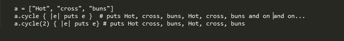
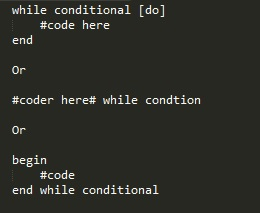
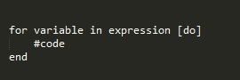

Ruby:Enumberable#Cycle
The #cycle method uses a block for each element of an enumerable object (ranges, hash, or array) repeatedly for n times or endlessly if n isn't specified. If a negative number or the source is empty then cycle returns nothing. It also returns nil if the loop finishes without getting interrupted. Cycle saves elements to an internal array so changes to enum after the first pass no effect; it is a nondestructive method.

In the example above we call ".cycle" on array. It will then iterate over each element in array for the length of the array to finish one cycle. We specify 2 cycles so it will iterate over the array a second time. Without specifying n the code will run numerous cycles. With this in mind we should also note #cycle does not specify the number of element to cycle through. Additionally, if #cycle is not passed a block it will return an Enumerator.
Looping Methods
The While loop
This loop executes code while a condition is TRUE. The conditional can be separated by "do", a new line, backslash, or semicolon. Use the while loop when you want code to run while a condition is true. the term "break" may be used in a while loop if you want the loop to stop executing code before the condition becomes false.

The Until Loop executes code while the conditional is False. Please take note this is different from the while loop. Similar to the while loop, the code is separated by "do", a new line, or a semicolon. This loop is in the same format as the while loop. Just replace while with until. Use the while loop when you want code to run until the condition becomes false.
The For statement executes code once for each element in the expression. A For loop is the same as " (expression).each do |variable| code end" except that the For loop doesn't create a new scope for local variables. A for loop expression is separated from code by..guess? "do", a new line, or a semicolon. Use a for loop when you want code to run a specific number of times.
